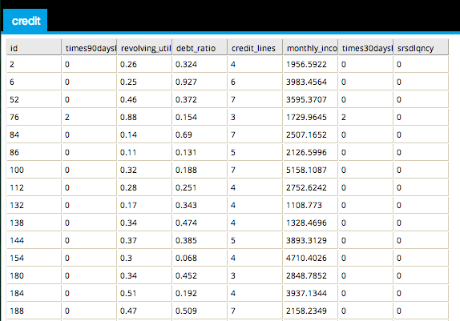

Data Explorer
- Use Data Explorer to view a preview of the dataset. The number of rows displayed can be configured in Preferences.
- Database operators must output a table/view for Data Explorer to be enabled.
- Hadoop operators must store results for Data Explorer to be enabled.
- Data Explorer is accessible from the Explore menu of the operator toolbar or by right-clicking an appropriate operator.
